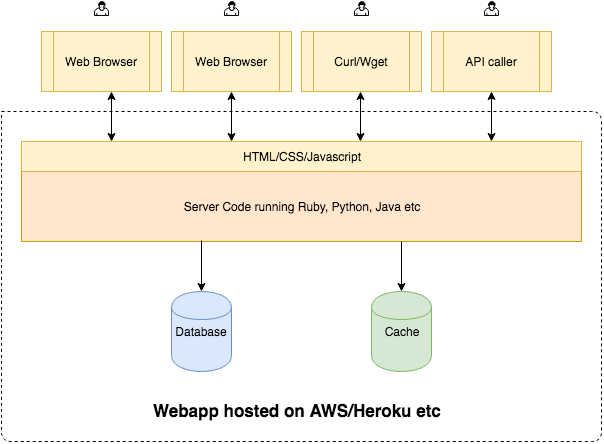
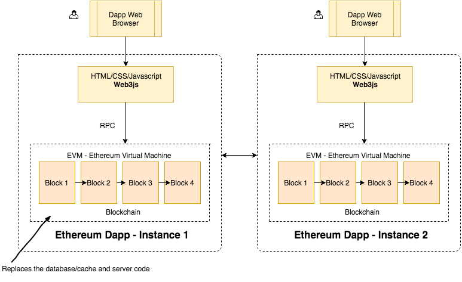

Hầu hết (nếu không muốn nói là tất cả) các ứng dụng mà chúng ta đang sử dụng ngày nay, đặc biệt là ứng dụng web, được phát triển theo mô hình centralized. Nghĩa là bạn sẽ thiết kế, triển khai code, rồi build toàn bộ ứng dụng thành 1 instance , sau đó quăng cái instance này lên máy chủ được cung cấp bởi bên thứ 3 (Google cloud, Microsoft Azure, AWS…). User/ client sẽ truy cập đến ứng dụng của bạn thông qua một máy chủ tập trung, và ngược lại, máy chủ này cung cấp nhiều session cho các user. Mô hình web hiện tại có thể tách biệt 1 application thành backend và frontend, hay thậm chí tách ứng dụng thành các microservices, nhưng nhìn chung, bạn vẫn sẽ deploy toàn bộ đống này lên máy chủ của bên thứ 3.

Vậy mô hình này có vấn đề gì? Câu trả lời là chả có vấn đề gì cả, cả thế giới vẫn đang code theo centralized đó thôi. Nhưng hãy tưởng tượng, một ngày nào đó, cloud server mà bạn đang thuê lăn đùng ra chết ( ͡° ͜ʖ ͡°). Việc này rất khó có khả năng xảy ra, vì máy chủ của Google, Amazon… chết là chuyện không tưởng. Nhưng… cuộc đời mà, biết đâu thiên tai, chiến tranh, khủng bố phá hủy cơ sở hạ tầng của các ông lớn này thì sao? Hay một khả năng dễ xảy ra hơn, account của bạn bị ban (ᴗ ͜ʖ ᴗ), toàn bộ data của bạn sẽ mất trắng. Bạn có thể nói ôi dào không chơi với thằng này thì mình host server ở hệ thống khác, thị trường cạnh tranh mà. Đúng là không có vấn đề gì khi bạn host một ứng dụng nhỏ, nhưng đối với các công ty vừa và lớn, lượng data nhiều, phục vụ hàng ngàn, hàng triệu user, chết cloud server chả khác gì phá sản. Chưa kể đến chi phí chuyển giao hạ tầng từ nhà cung cấp này sang nhà cung cấp khác.
Hoặc bạn đang sống trong một đất nước nào đó mà chính phủ yêu cầu phải cung cấp dữ liệu người dùng, hay hệ thống của bạn bị chi phối, kiểm duyệt… đó là lúc bạn cân nhắc đến hệ thống phân tán (decentralized).
Hệ thống phân tán là khỉ gì?
 Decentralized Application (Dapp) giải quyết các vấn đề nêu trên bằng cách… chả host app của bạn trên server nào cả, mỗi user sẽ là 1 node trong mạng lưới và có 1 database riêng, database này được sync với mọi node khác trong hệ thống thông qua mạng máy tính (nghe quen quen đúng không? ừ đúng rồi nó là blockchain đó :v thật ra Dapp sẽ chạy trên nền tảng blockchain). Nhưng nếu mọi node đều giữ database, thiết kế này có tốt về mặt hiệu năng? Dapp giải quyết vấn đề này bằng cách tạo ra các lightweight node. Phân tích kĩ thuật lightweight node sẽ được giải thích rõ hơn ở các bài viết sau, nói một cách đơn giản, node này sẽ không lưu trữ toàn bộ data của hệ thống, mà chỉ lấy về các data cần thiết.
Nhưng code của ứng dụng sẽ được lưu trữ, deploy như thế nào? Code của bạn sẽ nằm trong các smart contract, thường được viết bằng Solidity. Khi compile, code solidity sẽ được dịch thành Ethereum Byte Code, sau đó được đẩy vào blockchain. Bytecode này sẽ được run trong Ethereum Virtual Machine (EVM).
Dapp có lợi ích gì?
- Dapp khả chuyển và dễ mở rộng.
- Tính sẵn dùng cao, ngay cả khi một phần hệ thống bị lỗi, hay thậm chí chỉ còn 1 node (node đầy đủ) hoạt động, ta có thể khôi phục lại toàn bộ hệ thống từ node này.
- Không một cá nhân hay tổ chức nào có thể kiểm soát được hệ thống, trừ khi có đủ nguồn lực để thực hiện một cuộc tấn công 51% (khi quy mô của Dapp càng lớn, 51% attack đã dần trở nên bất khả thi).